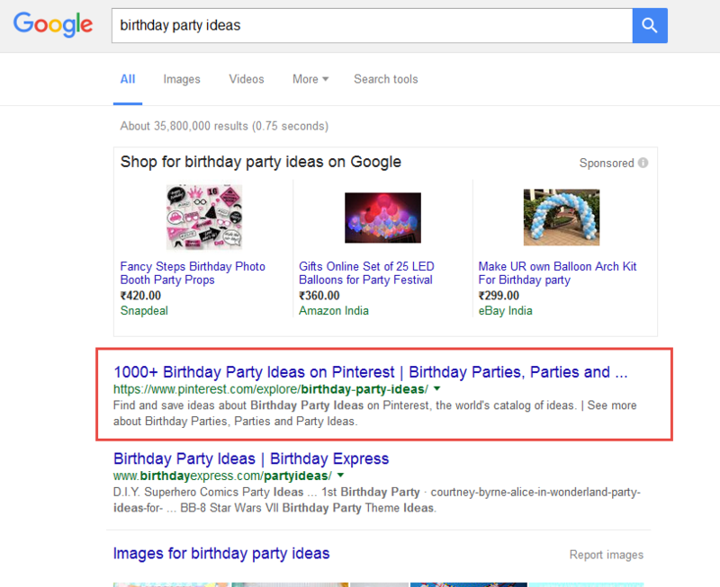
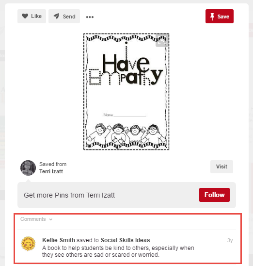

Look at today’s social media world scenario; you’ll see Facebook and Twitter are ruling it. Large companies and online businesses spend tons of money on advertising on these platforms.
It helps them to acquire more customers and grow their businesses, but they are so focused on using the platforms mentioned above that they completely ignore one powerful platform, and that is Pinterest.
Now let me explain, how you can leverage this situation for making more online. But first look at its facts below.
1. Pinterest has over 100 million active users and 176 million registered users, out of which 71% are women.
It's good news if you are trying to sell a product that is relevant to women customers. You can showcase your products to a mostly female audience with very less effort.
2. 93% of its users have bought something online.
This is a great sign as most of its users are accustomed to online shopping.
That means they are confident about making online purchases and you don’t need to convince them or mainly gain their trust to sell your online products.
3. Pinterest has two important features:
Both the features mentioned above allow you leverage Pinterest’s authority in search engines and help you reach audiences that are not even on Pinterest, thus hugely amplifying your reach at no cost.
For example, take a look at the following image:

In this image you can see that I searched a keyword “birthday party ideas,” you can also see on the red box that Pinterest’s page is ranking at the top organically.
If you have a board related to birthday party ideas, then there’s a very high chance that people will see it through this link and visit your website or online store.
It's a great way of driving traffic even if your site or online store is not ranking high in search engines.
Finally, the biggest advantage of Pinterest is the lack of competition when compared to Facebook and Twitter.
As very fewer marketers and companies are targeting Pinterest you as a someone who has none or least budget for marketing your business can use it for reaching more people and make handsome money online.
Almost anyone
1. Ability to create Pins that are helpful, and actionable
2. Ability to promote Pins on Pinterest
Almost instant, if you are ready with your Pins just register on Pinterest and start pinning.
1. Set clear goals - Before you start pinning, first define your strategy. It means you need to know everything about your product, website or service and how are you going to promote it on Pinterest.
Find the answers to the questions such as:
2. Create your profile - Based on the research you’ve done in the first step start creating your Pinterest profile. Here you’ll need to enter your business name, profile picture, description about you, location and website URL.
Make sure you fill everything above by keeping your target audience in mind, make it look relevant to them.
Also, don’t forget to add your website URL, when people will visit your Pinterest profile they’ll see the link to your site, and visit it. This is a great way of driving traffic so don’t ignore this.
2. Post regularly - Posting new Pins regularly is a great practice. When you post regularly, there’s a high chance that people will find your images in searches.
Also, your images appear in home feeds more often; this means that there’s a great chance of users Repinning them and share them on their boards providing you more exposure.
3. Use relevant tags - Choosing the relevant hashtags is one of the most important factors when you need to give maximum exposure to your images.
The right hashtags will bring your images in front of the right audience; this will help you to gather a responsive following who is interested in your niche.
Before choosing your tags, think about the common terms that people might use to find your images, make a list of them, then use them in as your hashtags.
4. Write detailed comments - When you upload or repin an image, Pinterest allows you to write a comment to describe the image.
You should use it this to tell people what the image is about if you don't write anything people won’t get your message from the image.
For example, take a look at the following image and its comment in the red box.

5. Add links - Another great feature of Pinterest is that it allows you to link to your website, blog, online store, etc. to the image.
While upload the image add the URL of your website or store, so when somebody clicks the image he will be redirected to your site or store.
6. Interact with your audience - Interacting with your audience is the key to finding success on Pinterest.
Go and follow other boards in your niche and repin their posts.
It will help you build relationships with other fellow users who will, in turn, reciprocate by following your boards.
There are some good ways to make money from Pinterest; I am listing a few below. Go ahead with the way that suits you the most.
1. Sell your products - If you have your Shopify store where you sell your products, then you can sell them directly on Pinterest with Buyable Pins.
To use Buyable Pins, you’ll have to convert your personal account into a business account. Once you’ve upgraded to a business account, you can quickly implement Buyable Pins without any hassle.
2. Website - If you already have a website in a particular niche, you can start creating content on products you want to promote along with your affiliate link. Now create a Pin related to the product and drive traffic from Pinterest your website.
3. Adsense Ads - If you don’t want to promote any products you can post informative articles related to your niche on your blog, drive traffic from Pinterest and monetize by placing Adsense ads.